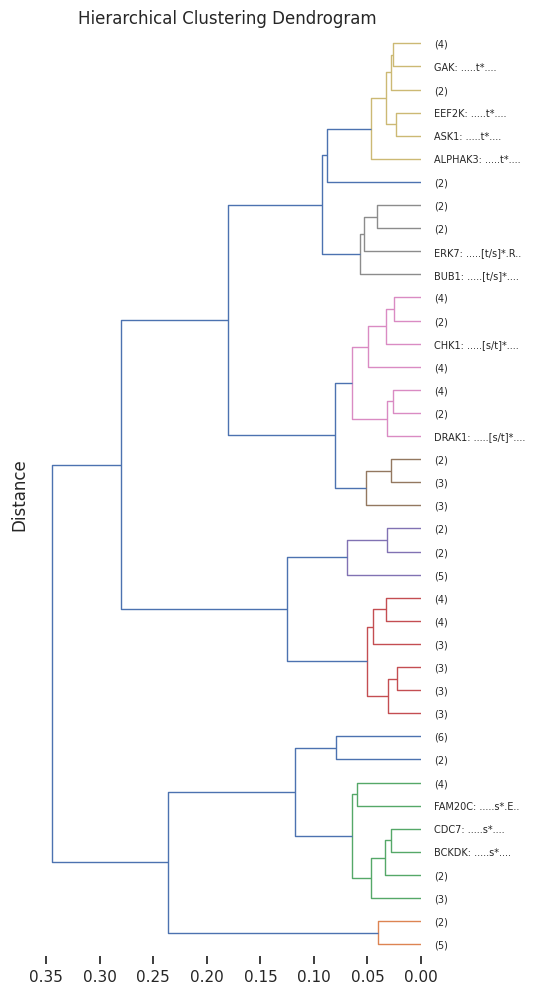

pssms = Data.get_pspa_all_scale()Hierarchical clustering
Setup
KL divergence
kl_divergence
kl_divergence (p1, p2, mean=True)
*KL divergence D_KL(p1 || p2) over positions.
p1 and p2 are arrays (df or np) with index as aa and column as position. Returns average divergence across positions if mean=True, else per-position.*
| Type | Default | Details | |
|---|---|---|---|
| p1 | target pssm p (array-like, shape: (AA, positions)) | ||
| p2 | pred pssm q (array-like, same shape as p1) | ||
| mean | bool | True |
The Kullback–Leibler (KL) divergence between two probability distributions ( P ) and ( Q ) is defined as:
\[ \mathrm{KL}(P \| Q) = \sum_{x \in \mathcal{X}} P(x) \log \left( \frac{P(x)}{Q(x)} \right) \]
This measures the information lost when ( Q ) is used to approximate ( P ). It is not symmetric, i.e.,
\[ \mathrm{KL}(P \| Q) \ne \mathrm{KL}(Q \| P) \]
and it is non-negative, meaning:
\[ \mathrm{KL}(P \| Q) \ge 0 \]
with equality if and only if ( P = Q ) almost everywhere.
In practical computation, to avoid numerical instability when ( P(x) = 0 ) or ( Q(x) = 0 ), we often add a small constant ( ):
\[ \mathrm{KL}_\varepsilon(P \| Q) = \sum_{x \in \mathcal{X}} P(x) \log \left( \frac{P(x) + \varepsilon}{Q(x) + \varepsilon} \right) \]
pssm_df.shape(23, 10)# one example
pssm_df = recover_pssm(pssms.iloc[1])
pssm_df2 = recover_pssm(pssms.iloc[0])kl_divergence(pssm_df,pssm_df2,mean=True)0.3724275257321628kl_divergence_flat
kl_divergence_flat (p1_flat, p2_flat)
p1 and p2 are two flattened pd.Series with index as aa and column as position
| Details | |
|---|---|
| p1_flat | pd.Series of target flattened pssm p |
| p2_flat | pd.Series of pred flattened pssm q |
kl_divergence_flat(pssms.iloc[1],pssms.iloc[0])CPU times: user 2.83 ms, sys: 322 μs, total: 3.15 ms
Wall time: 3.21 ms0.37242752573216287JS divergence
js_divergence
js_divergence (p1, p2, mean=True)
p1 and p2 are two arrays (df or np) with index as aa and column as position
| Type | Default | Details | |
|---|---|---|---|
| p1 | pssm | ||
| p2 | pssm | ||
| mean | bool | True |
The Jensen-Shannon divergence between two probability distributions $ P $ and $ Q $ is defined as:
\[ \mathrm{JS}(P \| Q) = \frac{1}{2} \, \mathrm{KL}(P \| M) + \frac{1}{2} \, \mathrm{KL}(Q \| M) \]
where $ M = (P + Q) $ is the average (mixture) distribution, and $ $ denotes the Kullback–Leibler divergence:
\[ \mathrm{KL}(P \| Q) = \sum_{x \in \mathcal{X}} P(x) \log \left( \frac{P(x)}{Q(x)} \right) \]
Therefore,
\[ \mathrm{JS}_\varepsilon(P \| Q) = \frac{1}{2} \sum_{x \in \mathcal{X}} P(x) \log \left( \frac{P(x) + \varepsilon}{M(x) + \varepsilon} \right) + \frac{1}{2} \sum_{x \in \mathcal{X}} Q(x) \log \left( \frac{Q(x) + \varepsilon}{M(x) + \varepsilon} \right) \]
js_divergence(pssm_df,pssm_df2)0.08286124552178498js_divergence(pssm_df,pssm_df)0.0# don't use it for flattend version, as it won't divide the total position
js_divergence(pssms.iloc[1],pssms.iloc[0])0.8286124552178498js_divergence_flat
js_divergence_flat (p1_flat, p2_flat)
p1 and p2 are two flattened pd.Series with index as aa and column as position
| Details | |
|---|---|
| p1_flat | pd.Series of flattened pssm |
| p2_flat | pd.Series of flattened pssm |
js_divergence_flat(pssms.iloc[1],pssms.iloc[0])CPU times: user 1.23 ms, sys: 0 ns, total: 1.23 ms
Wall time: 1.2 ms0.08286124552178498js_divergence_flat2
js_divergence_flat2 (p1_flat, p2_flat, mean=True)
p1 and p2 are two flattened pd.Series with index as aa and column as position
| Type | Default | Details | |
|---|---|---|---|
| p1_flat | pd.Series of flattened pssm | ||
| p2_flat | pd.Series of flattened pssm | ||
| mean | bool | True |
js_divergence_flat2(pssms.iloc[1],pssms.iloc[0])CPU times: user 11.2 ms, sys: 0 ns, total: 11.2 ms
Wall time: 10.1 ms0.08286124552178498js_divergence_flat2(pssms.iloc[1],pssms.iloc[0],mean=False)CPU times: user 10 ms, sys: 0 ns, total: 10 ms
Wall time: 9.18 msarray([0.06553878, 0.02571207, 0.05479896, 0.10319209, 0.08337669,
0.10549031, 0.34404931, 0.00729907, 0.02094918, 0.018206 ])This version is slower as it recover flat pssm to 2d pssm first, but it can return positional js.
get_1d_distance
get_1d_distance (df, func_flat)
Compute 1D distance for each row in a dataframe given a distance function
# return 1d distance
get_1d_distance(pssms.head(),js_divergence_flat)100%|█████████████████████████████████████████████████████████████████████████████████████████████| 5/5 [00:00<00:00, 301.61it/s]array([0.08286126, 0.08577979, 0.08798377, 0.0850101 , 0.00215833,
0.07937985, 0.07066438, 0.08348297, 0.07361696, 0.00425251])get_1d_js
get_1d_js (df)
Compute 1D distance using JS divergence.
distance = get_1d_js(pssms.head(20))100%|████████████████████████████████████████████████████████████████████████████████████████████| 20/20 [00:00<00:00, 69.75it/s]Parallel computing to accelerate when flattened pssms are too many in a df:
get_1d_distance_parallel
get_1d_distance_parallel (df, func_flat, max_workers=4, chunksize=100)
Parallel compute 1D distance for each row in a dataframe given a distance function
get_1d_distance_parallel(pssms.head(),js_divergence_flat)get_1d_js_parallel
get_1d_js_parallel (df, func_flat=<function js_divergence_flat>, max_workers=4, chunksize=100)
Compute 1D distance matrix using JS divergence.
get_1d_js_parallel(pssms.head())get_Z
get_Z (pssms, func_flat=<function js_divergence_flat>, parallel=True)
Get linkage matrix Z from pssms dataframe
Z = get_Z(pssms.head(10),parallel=False)100%|███████████████████████████████████████████████████████████████████████████████████████████| 10/10 [00:00<00:00, 144.66it/s]Z[:5]array([[1.00000000e+00, 2.00000000e+00, 2.15832816e-03, 2.00000000e+00],
[3.00000000e+00, 4.00000000e+00, 4.25250792e-03, 2.00000000e+00],
[5.00000000e+00, 1.10000000e+01, 4.65131778e-03, 3.00000000e+00],
[6.00000000e+00, 7.00000000e+00, 5.89060764e-03, 2.00000000e+00],
[1.00000000e+01, 1.30000000e+01, 9.31413380e-03, 4.00000000e+00]])plot_dendrogram
plot_dendrogram (Z, color_thr=0.07, dense=7, line_width=1, **kwargs)
| Type | Default | Details | |
|---|---|---|---|
| Z | |||
| color_thr | float | 0.07 | |
| dense | int | 7 | the higher the more dense for each row |
| line_width | int | 1 | |
| kwargs | VAR_KEYWORD |
set_sns(100)plot_dendrogram(Z,dense=7,line_width=1)
plot_dendrogram(Z,dense=4)
pssm_to_seq
pssm_to_seq (pssm_df, thr=0.2, clean_center=True)
Represent PSSM in string sequence of amino acids
| Type | Default | Details | |
|---|---|---|---|
| pssm_df | |||
| thr | float | 0.2 | threshold of probability to show in sequence |
| clean_center | bool | True | if true, zero out non-last three values in position 0 (keep only s,t,y values at center) |
pssm_to_seq(pssm_df,thr=0.1)'...[E/D].[t/s]*[s/t]...'get_pssm_seq_labels
get_pssm_seq_labels (pssms, count_map=None, thr=0.3)
Use index of pssms and the pssm to seq to represent pssm.
| Type | Default | Details | |
|---|---|---|---|
| pssms | |||
| count_map | NoneType | None | df index as key, counts as value |
| thr | float | 0.3 | threshold of probability to show in sequence |
get_pssm_seq_labels(pssms.head(10))['AAK1: .....t*G...',
'ACVR2A: .....[t/s]*....',
'ACVR2B: .....[t/s]*....',
'AKT1: ..RR.[s/t]*....',
'AKT2: ..R..[s/t]*....',
'AKT3: ..RR.[s/t]*....',
'ALK2: .....[t/s]*....',
'ALK4: .....[t/s]*....',
'ALPHAK3: .....t*....',
'AMPKA1: .....[s/t]*....']import random# get a dict of index and counts
count_dict = {idx:random.randint(1,100) for idx in pssms.head(10).index}labels= get_pssm_seq_labels(pssms.head(10),count_dict)
labels['AAK1 (n=64): .....t*G...',
'ACVR2A (n=56): .....[t/s]*....',
'ACVR2B (n=30): .....[t/s]*....',
'AKT1 (n=37): ..RR.[s/t]*....',
'AKT2 (n=94): ..R..[s/t]*....',
'AKT3 (n=68): ..RR.[s/t]*....',
'ALK2 (n=86): .....[t/s]*....',
'ALK4 (n=79): .....[t/s]*....',
'ALPHAK3 (n=64): .....t*....',
'AMPKA1 (n=88): .....[s/t]*....']plot_dendrogram(Z,dense=4,labels=labels)
Full pipeline
# get distance matrix
pssms=pssms.head(100)
Z = get_Z(pssms)
# optional, get counts for each index
# count_dict = pssms.index.value_counts()
# get pssm to seq labels with counts
# labels= get_pssm_seq_labels(pssms,count_dict)
# or get pssm to seq labels only
labels= get_pssm_seq_labels(pssms)# plot dendrogram
plot_dendrogram(Z,dense=8,labels=labels,truncate_mode='lastp', p=40) # only show 40
# save
# save_pdf('dendrogram.pdf')